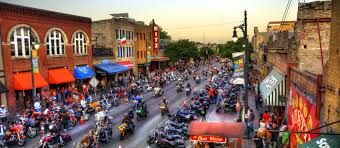

Sobre o Texas
O Texas é o segundo maior estado dos EUA, conhecido por sua rica cultura western, música country, churrasco incomparável e espírito independente. Com suas vastas planícies, modernas metrópoles e história fascinante, o Texas oferece uma experiência única aos visitantes.
Principais Cidades
- Houston - Capital espacial dos EUA
- Austin - Capital do estado e centro musical
- Dallas - Centro financeiro e cultural
- San Antonio - Cidade histórica do Alamo
- Fort Worth - Cidade dos cowboys



Atrações Imperdíveis
| Atração | Localização | Descrição |
|---|---|---|
| O Alamo | San Antonio | Forte histórico e símbolo da independência texana |
| Space Center | Houston | Centro espacial da NASA |
| River Walk | San Antonio | Passeio às margens do rio com restaurantes e lojas |
| State Capitol | Austin | Sede do governo estadual |
Curiosidades
- O Texas já foi um país independente por 9 anos
- É o maior produtor de energia eólica dos EUA
- Possui o segundo maior canyon dos EUA
- É conhecido como o "Lone Star State" (Estado da Estrela Solitária)